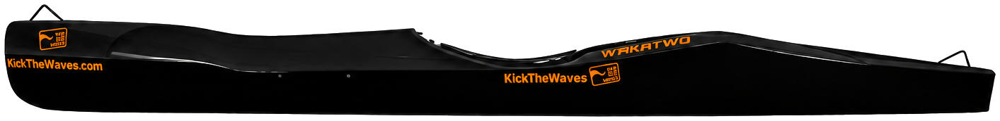

Canoë-kayak · Descente · Équipe de France
LOÏG LE
GUENNEC
Champion d'Europe par équipe. Vice-champion d'Europe. Direction Graz 2027.
Palmarès
Une progression continue.
Portée par le travail acharné et un entourage engagé.
Vice-champion d'Europe en sprint kayak

2026
- 2EVice-champion d'Europe en individuel — Kayak
- 1ERChampion d'Europe par équipe — Écosse
- 4E4ème aux Championnats d'Europe en Canoë biplace
- 1ER2 titres de Champion de France
- ÉDFSélection en Équipe de France
- 2E4 médailles d'argent aux Championnats de France
- 3E1 médaille de bronze aux Championnats de France
- ★De nombreuses médailles aux Championnats de France par équipe
2025
- Aux portes de l'Équipe de France
- 2 top 5 aux Championnats de France sprint
- Médailles aux Championnats de France par équipe
2024
- Champion de France U15 en Kayak individuel
- Vainqueur de la Coupe de France
2023
- 5ème aux Championnats de France en Kayak U15
- Champion de France en Canoë biplace
- Vainqueur de la Coupe de France
L'objectif
Graz, Autriche.
Été 2027.
Après une première saison internationale couronnée de médailles, l'objectif est clair : devenir double champion du monde des Championnats du Monde U18. Individuel et par équipe.
Cet objectif peut se réaliser avec votre aide — une aide précieuse, sans laquelle cette trajectoire n'irait pas aussi loin.
Graz 2027 n'est qu'une étape. L'ambition va plus loin : devenir champion du monde chez les seniors, en classique comme en sprint.


Qui suis-je
Seize ans, six ans d'eau vive, une équipe de France.
Je m'appelle Loïg Le Guennec, j'ai 16 ans, et je suis pagayeur en canoë-kayak, discipline descente de rivière, au sein du Torcy Canoë Kayak.
Je suis monté sur l'eau pour la première fois à l'âge de 10 ans. Au début, c'était juste pour m'amuser sur l'eau, puis peu à peu tout a évolué et c'est devenu plus sérieux. Aujourd'hui, je porte les couleurs de l'Équipe de France et je viens de décrocher mes premières médailles internationales aux Championnats d'Europe en Écosse.
Je vis pour mes objectifs sportifs. Mais j'ai aussi des objectifs scolaires clairs, et ça compte tout autant pour moi — l'un ne va pas sans l'autre.
Ce n'est que le début de l'aventure. Je compte bien aller beaucoup plus loin.
Mon objectif : devenir double champion du monde U18 à Graz, en Autriche, en 2027.
Dans le bateau
Embarquez avec moi, dans le bateau.
Une caméra embarquée pour vivre la course depuis le kayak, au plus près de la rivière.

Devenir partenaire
Pourquoi devenir partenaire
La performance ne se construit pas seul. Elle se construit avec un entourage — coach, famille, préparation physique et médicale — et avec les moyens de se déplacer, de s'entraîner, de progresser sans compter.
Rejoindre mon projet, c'est faire partie de cet entourage. C'est associer votre marque à une trajectoire sportive ambitieuse, portée par des valeurs d'eau, de nature et de dépassement de soi — et suivre de près une progression vers l'objectif 2027.
Aujourd'hui, tout cela est possible financièrement grâce à mes parents, qui financent ma saison. Sans eux, la performance serait impossible.
Chaque euro compte et peut m'aider à aller encore plus loin — à me rapprocher un peu plus de mon rêve.
De nombreuses personnes me soutiennent aussi dans mon projet sportif : mon entraîneur, qui est derrière chacune de mes performances, une diététicienne, un ostéopathe, un médecin du sport, et mon club.
Des moyens supplémentaires m'aideraient grandement dans mon projet et pourraient vraiment m'aider à atteindre mes objectifs : toute l'année, je dois changer et améliorer mon matériel, qui est coûteux, et mes déplacements pour préparer les compétitions le sont tout autant.
En échange de votre soutien : visibilité sur mon bateau de compétition, présence sur mes réseaux et mes lives de compétition, et une relation directe et personnalisée avec vous.
Discutons de notre partenariat →Votre logo sur mon bateau
Choisissez votre emplacement.
Déposez votre logo sur la coque pour voir ce que donnerait votre marque en course. Rien n'est envoyé : votre fichier reste dans votre navigateur.

Glissez un PNG à fond transparent sur un emplacement, ou utilisez les boutons ci-dessous.
Visuel d'illustration à but de simulation. Les emplacements définitifs et leurs dimensions sont convenus ensemble, dans la limite du règlement de la Fédération.